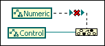

The To More Generic Class node expects the reference input to be of a specific data type that will be converted to the more generic type specified by the target class input. You might encounter this error when working with VI Server refnums, DAQmx refnums, and .NET class refnums. In the following illustration, two VI Server refnums are wired, but LabVIEW indicates that the target type is not a more generic type than the reference type.
To correct this error, you must change either the reference or target class so that the target class is an ancestor of the reference class.